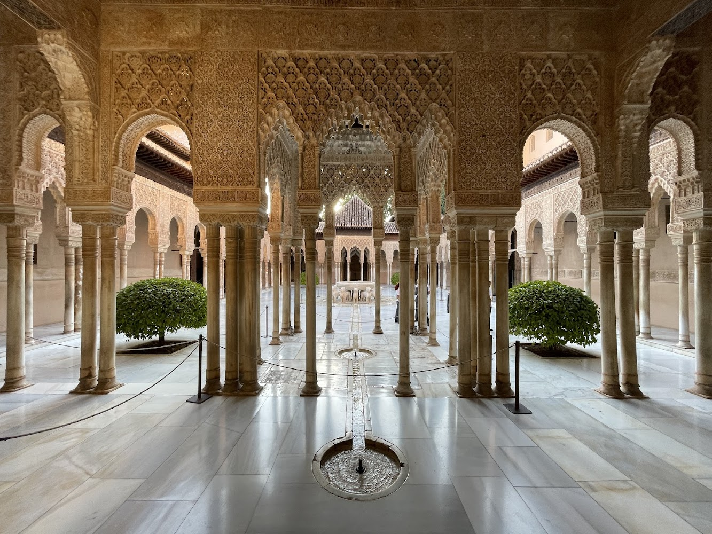
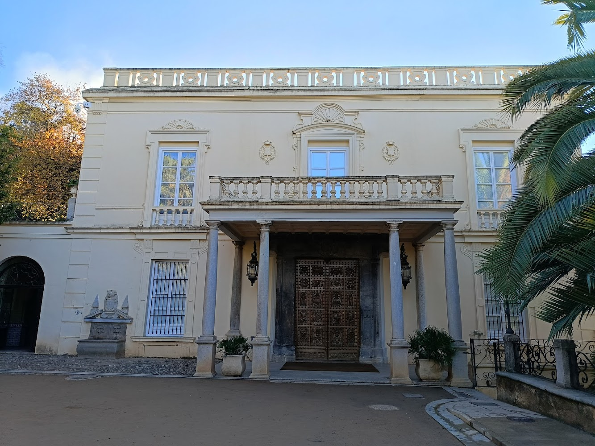
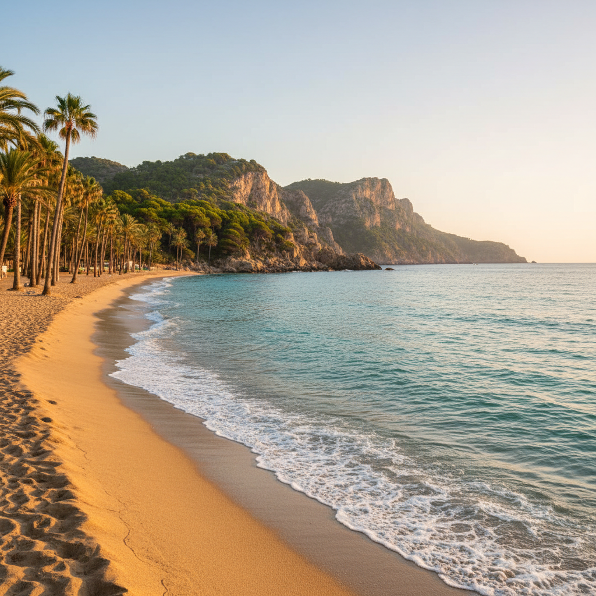

Looking to capture some amazing images in Granada? Look no further! We're the go-to production company in the Andalucía area, and we've got all the inside scoop to make your shoot unforgettable. If you want a place that instantly gets your creative brain buzzing, Granada is one of those cities.
It's honestly wild how much visual variety you get in such a small area. One minute you're shooting in whitewashed alleys and crumbling stone stairways, the next you're surrounded by ornate Moorish arches, tiled courtyards, and palm-filled gardens. You barely have to move, but every frame looks completely different. The light here is a dream. Soft, golden, flattering — especially in the mornings and around sunset. The buildings and stone bounce the light beautifully, so even simple setups look elevated. If you love working with natural light, Granada really shows up for you.
We've got a knack for finding unique and quirky backdrops as well as breathtaking scenic spots. From hidden gems to iconic locations, we'll suggest the perfect locations to make your content pop!
But that's not all — we'll take care of all the nitty-gritty details too. Permits? No problem. Accommodation? We've got you covered. Equipment? Ready to hire! We'll ensure your team has everything they need to focus on creating stunning work.
And here's the best part: we'll let you in on the local secrets. So, let's make your shoot in Granada absolutely unforgettable. Get in touch with us today and let's capture some magic together!

Moorish Architecture
Ornate details, warm stone, and timeless Andalusian backdrops rich in culture and atmosphere.

Historic and Traditional
Granada's unique architecture provides an instant, textured depth that makes subjects pop without complex studio setups. Additionally, the hillside alleys of traditional quarters capture dramatic natural lighting and timeless sunset backdrops that simply cannot be replicated.

Mediterranean Coastlines
Sunlit shores, textured cliffs, and expansive sea views ideal for clean, natural, and light-filled imagery.

Granada City Center & Modern Architecture
Historic streetscapes where aged architecture contrasts sleek modern lines, offering visual interest, lighting, composition, and everyday movement to create an authentic lived-in backdrop.

Alpine and Vistas
Dramatic mountain scenery, open horizons, and high-altitude light for bold, cinematic compositions.Frame your subject against the breathtaking, sun-drenched palaces of the Alhambra, where ancient architecture meets the dramatic backdrop of mountains. Albaicín’s Capture the essence of romance amidst the winding, whitewashed alleys opening up to panoramic vistas that perfectly frame Spain’s most iconic historic skyline.